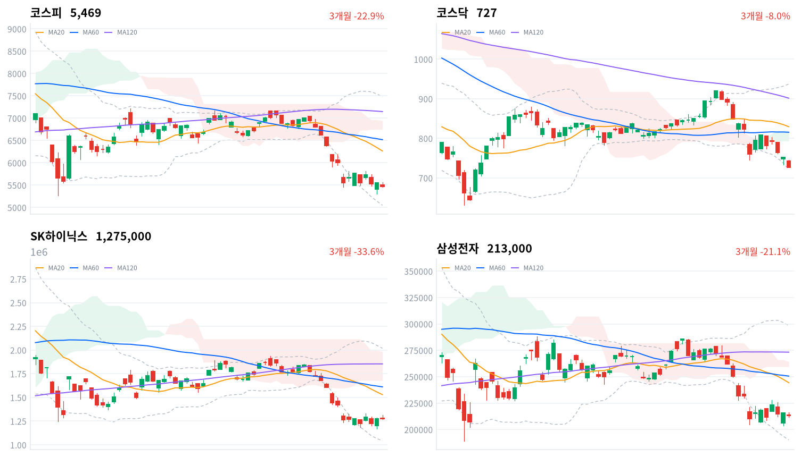

코스피는 장 초반 한때 전일 종가를 넘었지만 오후 들어 밀려 하루 저점 근처에서 마감했다. 외국인이 팔고 기관이 받는 구도가 2거래일째 이어졌고, 코스닥은 그날 저점에서 끝났다.
외국인 매도는 실적·FOMC를 앞둔 관망보다 한국 반도체 비중을 줄이는 흐름의 연장으로 판단한다. 이 판단은 10월 29·30일 외국인 수급으로 확인한다.
외국인은 코스피에서 6,903억원을 순매도해(당일 잠정) 10월 23일에 이어 2거래일 동안 1조6,714억원을 팔았다. 기관이 2거래일 연속 그 물량을 받았지만, 지수는 10월 21일 반등이 시작되기 전보다 낮은 곳에서 마감했다. 반도체와반도체장비 업종은 173종목 가운데 19종목만 올랐다.
장 마감 뒤 보도는 외국인 매도를 SK하이닉스(10월 28일)·삼성전자(10월 29일) 실적과 FOMC를 앞둔 관망으로 설명하고, 실적을 확인한 뒤 대규모 매매가 나올 수 있다고 본다. 이벤트를 앞두고 매수가 줄었다는 데에는 동의한다. 다만 관망은 매매를 줄이는 쪽인데, 외국인은 2거래일 동안 1조원 넘게 팔았다. 코스피 낙폭도 직전 미국 세션의 세 지수와 아시아 네 지수 평균(-0.48%)보다 컸다. 그래서 오늘 매도는 이벤트 대기보다 한국 반도체 비중을 줄이는 흐름이 이어진 것으로 본다.
한국 반도체에 매도가 몰렸다는 판단은 반도체 업종에서 오른 종목이 열에 하나꼴이었다는 점과 국가 간 낙폭 차이에 기댄다. 업종별 외국인 순매매 자료는 없어, 외국인 순매도와 반도체 약세가 같은 날 나왔다는 사실까지가 근거다. 실적과 추가 주주환원이 기대를 넘고 FOMC가 무난하면 외국인이 돌아올 수도 있으나, 한 달 사이 반도체 대형주가 급락한 뒤 비중을 맞추는 매도라면 이벤트가 지나도 이어진다고 본다. 두 설명은 10월 29·30일 두 세션의 외국인 코스피 순매수 합계(당일 잠정)로 확인한다. 합계가 순매도면 비중 축소 해석을 뒷받침하고, +5,000억원 이상이면 관망 해석이 더 설득력 있는 설명이다.
2거래일 매도만으로 외국인의 방향이 굳었다고 보기는 이르고, 새로 제안할 상품은 없다. 미국 반도체 업종에 옮겨 읽을 것은 한국 반도체의 낙폭보다 그 매도가 한국에 한정됐다는 점이다. 가장 가까운 결정적 일정은 10월 28일 SK하이닉스 3분기 실적과 추가 주주환원 방안이다.
코스피가 10월 26일 기준 일목 전환선 5,748 위에서 마감하면, 외국인 매도를 비중 축소의 연장으로 본 판단을 철회하고 매도가 멈췄다고 본다. 이 선은 오늘 종가보다 약 5% 위에 있다. 아래로는 10월 23일 장중 저점이 만든 20일 저점(5,306)이 가장 가까운 지지다.
출처: 뉴스1, 아주경제, 서울경제TV
직전 10월 23일 미국 세션은 다우가 1.23%, S&P500이 0.52%, 나스닥이 0.21% 내렸다. 오늘 아시아는 엇갈렸다. 닛케이(-0.80%)와 대만가권(-1.81%, 10월 22일 값)은 내렸고 항셍(+0.51%)과 상해종합(+0.19%)은 올랐다. 네 지수 평균은 -0.48%였고, 코스피는 이보다 0.98%포인트 약했다.
코스피는 전일 종가(5,550)보다 0.9% 낮은 5,499에서 출발했다. 한국 정규장 동안 나스닥 선물은 0.40%, S&P500 선물은 0.08% 내려 기술주 쪽이 더 약했다.
코스피는 장 초반 5,566까지 올라 한때 전일 종가를 넘었지만, 오후에 밀려 하루 범위의 아래쪽에서 마감했다. 코스닥은 그날 저점에서 끝났다. 원/달러는 장중 오르내림이 작았다.
외국인이 팔고 기관이 받은 날이다. 반도체·조선·방산·은행이 함께 내렸고, 건강관리기술 업종만 크게 올랐다. 보도는 외국인 매도와 AI 투자의 수익성 우려, 미국 제조업 호조에 따른 긴축 우려, 이벤트를 앞둔 관망을 하락 배경으로 들었다. 코스피 종가가 4월 6일 이후 가장 낮다는 보도도 나왔다. 시간외 거래 자료는 없어 장 마감 뒤 흐름은 확인하지 못했다.
출처: 아주경제, 서울경제TV, 헤럴드경제
코스피는 1.46% 내린 5,469, 코스닥은 3.26% 내린 727로 마감했다. 코스닥 낙폭이 코스피의 두 배를 넘었고, 코스닥 장중 저점이 새 20일 저점이 됐다.
| 지수 | 종가 | 등락률 | 시가 | 고가 | 저가 | 전일 종가 |
|---|---|---|---|---|---|---|
| 코스피 | 5,469.47 | -1.46% | 5,499.05 | 5,565.67 | 5,455.11 | 5,550.30 |
| 코스닥 | 727.21 | -3.26% | 742.17 | 745.95 | 727.20 | 751.69 |
매도는 장 막판에 몰렸다. 코스피는 오후에 낙폭을 1% 안쪽으로 줄였다가 마지막 30분에 5,502에서 5,470으로 밀렸고, 코스닥도 같은 시간에 733에서 727로 내려 저점에서 끝났다. 종가가 하루 저점 부근이라 매도 압력이 마감까지 이어졌다고 본다.
| 주체 | 순매수(억원) |
|---|---|
| 개인 | +501 |
| 외국인 | -6,903 |
| 기관 | +6,035 |
| 주체 | 순매수(억원) |
|---|---|
| 개인 | +823 |
| 외국인 | +433 |
| 기관 | -1,282 |
지수를 끌어내린 쪽은 외국인이다. 외국인은 코스피에서 6,903억원을 순매도했다(전일 9,811억원 순매도, 당일 잠정). 기관은 6,035억원을 순매수해(전일 8,682억원 순매수) 2거래일째 외국인 물량을 받았고, 개인은 501억원 순매수에 그쳤다. 10월 23일 값은 오늘 다시 받은 잠정치라 어제 글의 외국인 9,778억원, 기관 8,675억원과 조금 다르다.
코스닥은 수급 구도가 달랐다. 외국인이 433억원을 순매수해(전일 401억원 순매도) 6거래일 연속 매도를 끝냈고, 기관이 1,282억원을 순매도했다. 3.26% 급락한 날 코스닥의 순매도 주체는 외국인이 아니라 기관이었다.
장중 누적 수급과 프로그램 매매는 받을 수 있는 자료가 없어 싣지 않는다.
| 순위 | 종목/ETF | 구분 | 거래대금 | 비고 |
|---|---|---|---|---|
| 1 | SK하이닉스 | 개별주 | 3.07조원 | - |
| 2 | 삼성전자 | 개별주 | 2.37조원 | - |
| 3 | 반도체 테마 ETF | 테마·롱 | 1.14조원 | 29종 합산 |
| 4 | KODEX CD금리액티브(합성) | 단기금리·현금성 | 1.08조원 | - |
| 5 | 삼성전기 | 개별주 | 0.44조원 | - |
| 6 | TIGER CD1년금리액티브(합성) | 단기금리·현금성 | 0.34조원 | - |
| 7 | 삼성E&A | 개별주 | 0.33조원 | - |
| 8 | SK스퀘어 | 개별주 | 0.30조원 | - |
| 9 | 삼성전자우 | 개별주 | 0.28조원 | - |
| 10 | 삼성SDI | 개별주 | 0.24조원 | - |
단위 백만원 원본을 조 단위로 환산했다. 같은 기초자산 ETF는 방향별로, 같은 테마 섹터 ETF는 테마별로 묶고 지수·해외 ETF는 제외했다.
거래는 여전히 반도체에 몰렸다. SK하이닉스(3.07조원)와 삼성전자(2.37조원)가 1·2위였고, 반도체 테마 ETF 29종 합산(1.14조원)이 3위였다. 거래대금이 몰린 두 대형주의 주가는 지수보다 덜 내렸다(SK하이닉스 -0.16%, 삼성전자 -1.16%).
현금성 상품의 거래도 두드러졌다. KODEX CD금리액티브(합성)가 4위, TIGER CD1년금리액티브(합성)가 6위에 올랐다. 거래대금은 사고판 금액을 합친 값이라 이것만으로 돈이 들어왔다고 볼 수는 없지만, 최근 한 달 채권형 펀드에 4조원 넘는 자금이 몰렸다는 보도와 같은 방향의 관측이다.
출처: 매일경제
하락은 반도체 대형주 밖에서 더 컸다. 반도체와반도체장비 업종은 0.21% 내리는 데 그쳤지만 173종목 가운데 19종목(11%)만 올랐고, 대표 ETF 기준 반도체 섹터는 4.18% 내렸다. 두 대형주보다 나머지 반도체 종목이 더 크게 빠졌다는 뜻이다(한미반도체 -3.66%, 대덕전자 -3.62%). 대표 ETF 기준 방산(-4.31%)·철강소재(-4.01%)·조선(-3.73%)·은행(-3.38%)도 크게 내렸다.
오른 업종은 좁았다. 건강관리기술 업종은 16.64% 올라 13종목 가운데 11종목이 함께 올랐지만 확인된 재료는 없다. 소프트웨어(+0.36%)는 74종목 가운데 26종목만 올랐다. 기간을 넓히면 1개월 기준 방산(-30.49%)·조선(-29.83%)·반도체(-23.78%)의 낙폭이 가장 크다.
반도체 대형주가 함께 내렸다(삼성전자 -1.16%, 삼성전자우 -2.20%). 외국인 매도와 AI 투자 수익성 우려 속에 반도체·2차전지가 일제히 약했다는 보도가 나왔고, 삼성전자 고유의 재료는 확인되지 않았다.
삼성물산이 올랐다(삼성물산 +1.39%). 확인된 재료 없음.
삼성생명이 올랐다(삼성생명 +0.61%). 확인된 재료 없음.
조선주가 급락했다(HD현대마린솔루션 -13.69%, HD현대중공업 -5.08%). HD현대마린솔루션은 이날 3분기 매출 6,501억원으로 역대 최대를 냈지만, 외환손실 589억원 탓에 순이익은 326억원으로 59.1% 줄었다. 실적이 시장 예상에 못 미친 것을 하락 이유로 든 보도가 나왔다. HD현대중공업의 고유 재료는 확인되지 않았고, 한화오션(-4.16%)·삼성중공업(-3.15%)도 함께 내렸다.
방산주가 크게 내렸다(LIG디펜스앤에어로스페이스 -9.78%). 한화에어로스페이스(-4.04%)와 현대로템(-4.35%)도 내렸다. 현대로템 실적 부진 뒤 방산 전반이 조정받는 가운데 LIG디펜스앤에어로스페이스에 개별 악재가 겹쳤다는 보도가 나왔지만, 그 악재의 내용은 확인되지 않았다.
이 밖에 HD현대에너지솔루션(-10.34%)·HD건설기계(-9.29%)·삼양식품(-8.90%)·GS(-8.06%)·한화솔루션(-6.85%)이 크게 내렸지만 확인된 재료는 없다.
출처: 아주경제, 국제뉴스, MTN, 이코노미트리뷴, 글로벌이코노믹, 파이낸셜뉴스
국고채 금리는 주식 약세 속에 소폭 내렸다. 3년물은 1.4bp 내린 3.789%, 10년물은 2.3bp 내린 4.074%였고, 회사채 AA- 3년물은 1.6bp 내린 4.476%였다.
| 지표 | 금리 | 전일比(bp) | 기준일 |
|---|---|---|---|
| 국고채 3년 | 3.789% | -1.4 | 2026-10-26 |
| 국고채 10년 | 4.074% | -2.3 | 2026-10-26 |
| CD 91일 | 3.260% | 0.0 | 2026-10-26 |
| 회사채 AA- 3년 | 4.476% | -1.6 | 2026-10-26 |
| 한국은행 기준금리 | 3.000% | 0.0 | 2026-09 |
한국은행 경제통계시스템(ECOS) 기준. 기준금리는 2026년 9월 기준 값이다.
10년물과 3년물의 차이는 28.5bp로 0.9bp 줄었고, 최근 2년(531거래일)의 한가운데쯤에 있다. 장기 금리가 조금 더 내린 평탄화지만 폭이 작아 경기 기대가 바뀌었다고 볼 크기는 아니다.
신용 금리차는 주식 급락에도 더 넓어지지 않았지만 높은 자리를 지켰다. 회사채 AA- 3년물과 국고채 3년물의 차이는 68.7bp로 0.2bp 줄었고, 최근 2년(531거래일) 가운데 이보다 넓었던 날이 47일뿐이다. 기업이 돈을 빌리는 비용이 국고채보다 크게 매겨진 상태가 이어지고 있다.
| 미국 참조 지수 | 구분 | 관측 | 등락률 | 업종 내 상승 비율 | 기준일 |
|---|---|---|---|---|---|
| 반도체·AI 하드웨어 | 업종 | 반도체와반도체장비 | -0.21% | 11% | 10/26 |
| 반도체·AI 하드웨어 | 종목 | SK하이닉스 | -0.16% | – | 10/26 |
| 반도체·AI 하드웨어 | 종목 | 삼성전자 | -1.16% | – | 10/26 |
| 반도체·AI 하드웨어 | 지수 | 대만가권 | -1.81% | – | 10/22 |
| 전력망 | 업종 | 전기제품 | -1.67% | 16% | 10/26 |
| 전력망 | 종목 | HD현대일렉트릭 | -4.89% | – | 10/26 |
| 전력망 | 종목 | LS ELECTRIC | -2.55% | – | 10/26 |
| 전력망 | 종목 | 효성중공업 | -1.28% | – | 10/26 |
| 방산 | 종목 | 한화에어로스페이스 | -4.04% | – | 10/26 |
| 방산 | 종목 | 현대로템 | -4.35% | – | 10/26 |
| 방산 | 종목 | LIG디펜스앤에어로스페이스 | -9.78% | – | 10/26 |
| 산업재 | 업종 | 기계 | -1.84% | 29% | 10/26 |
| 산업재 | 종목 | HD현대중공업 | -5.08% | – | 10/26 |
| 산업재 | 종목 | 한화오션 | -4.16% | – | 10/26 |
| 산업재 | 종목 | 삼성중공업 | -3.15% | – | 10/26 |
| 금속·광업 | 업종 | 철강 | -2.15% | 16% | 10/26 |
| 금속·광업 | 업종 | 비철금속 | -1.50% | 18% | 10/26 |
| 금속·광업 | 종목 | POSCO홀딩스 | -2.18% | – | 10/26 |
| 금융 | 업종 | 증권 | -1.87% | 8% | 10/26 |
| 금융 | 종목 | KB금융 | -3.79% | – | 10/26 |
| 금융 | 종목 | 신한지주 | -2.95% | – | 10/26 |
| 소프트웨어 | 업종 | 소프트웨어 | +0.36% | 35% | 10/26 |
| 소프트웨어 | 업종 | IT서비스 | -1.65% | 30% | 10/26 |
| 소프트웨어 | 종목 | NAVER | +0.35% | – | 10/26 |
| 소프트웨어 | 종목 | 카카오 | -1.34% | – | 10/26 |
| 에너지 | 업종 | 석유와가스 | -1.41% | 10% | 10/26 |
| 에너지 | 종목 | S-Oil | -3.55% | – | 10/26 |
| 에너지 | 종목 | SK이노베이션 | -0.80% | – | 10/26 |
| 일본 | 지수 | 닛케이 | -0.80% | – | 10/26 |
| 중국 | 지수 | 항셍 | +0.51% | – | 10/26 |
| 중국 | 지수 | 상해종합 | +0.19% | – | 10/26 |
원/달러는 한국장 시간대에 1,320원(14:00)과 1,326원(10:30) 사이에서 움직였고, 15:30에 1,323원 부근에서 마지막으로 관측됐다(공식 종가 아님). 외국인이 코스피를 크게 판 날에도 원화가 약해지지 않아, 해외주식의 원화 환산 가치와 대기 자금으로 달러를 사는 비용은 거의 그대로다. 현금 운용의 참고 금리인 CD 91일 금리도 변하지 않았다.
반도체는 대만가권이 10월 22일 값(-1.81%)만 있어, 오늘 한국 반도체 약세가 아시아 반도체 공통의 움직임인지 같은 날로 비교할 수 없다. 미국 반도체 업종의 수요 판단은 10월 29일 새벽(한국 시간) 알파벳·마이크로소프트 실적에서 새 근거를 얻는다. 방산은 LIG디펜스앤에어로스페이스(-9.78%)·현대로템(-4.35%)·한화에어로스페이스(-4.04%)가 함께 내렸다. 이스라엘의 이란 공격 재개 검토 보도가 나온 날에도 내려, 이 하락은 지정학 재료보다 현대로템 실적 부진에서 번진 업종 조정으로 본다.
출처: 파이낸셜뉴스, 서울경제
SK하이닉스는 10월 28일, 삼성전자는 10월 29일 3분기 실적을 발표한다. SK하이닉스는 8월 40조원 규모의 자사주 매입·소각을 발표하면서 추가 환원의 규모와 방식을 3분기 실적 때 안내하겠다고 밝혔다는 보도가 나왔다. 삼성전자는 잠정 매출 195조원, 영업이익 107조4,000억원을 이미 공개했고, 확정 실적에서는 사업부별 이익과 향후 전망이 새로 나온다. 같은 29일 새벽(한국 시간)에는 FOMC 결과와 알파벳·마이크로소프트 실적도 나온다.
추가 환원 규모가 크면 회사가 시장에서 자기 주식을 사들이는 물량이 늘어, 외국인이 파는 물량을 받을 매수 주체가 하나 더 생긴다. 사업부별 이익에서 HBM 수요와 증설 속도가 드러나면 반도체 이익 전망을 다시 매길 근거가 된다. 두 종목이 실적을 앞두고 함께 내린 것은 기대가 낮다는 해석과도, 재료를 아직 가격에 싣지 않았다는 해석과도 부합해 판단을 보류한다. 다음 분기점은 28일 추가 환원의 규모와 방식, 29일 삼성전자 메모리 사업부 이익이다.
SK하이닉스가 솔리다임의 나스닥 상장 검토를 중단한 뒤, 금융당국의 중복상장 규제 기조가 현대차·두산·LG전자 계열사의 해외 상장에도 영향을 줄 수 있다는 보도가 나왔다. 당국은 자회사가 신주를 발행하면 모회사 주주의 가치가 희석된다는 점을 문제 삼아 이사회의 소액주주 보호 책임을 강조하고 있다.
자회사 상장이 막히면 모회사 주주의 가치 희석 우려는 줄지만, 적자 자회사가 외부 자금을 끌어오지 못하면 그 현금 부담을 모회사가 떠안는다. 할인 축소와 현금 부담 가운데 어느 쪽이 크게 작용할지는 회사마다 다르다. 오늘 현대차(-2.54%)와 두산(-6.54%)이 내렸지만 이를 규제와 연결한 보도는 없어 판단을 보류한다. 다음 분기점은 당국이 가이드라인을 제도로 만드는지이고, 일정은 미확정이다.
정부가 내년 1월 시행 예정인 가상자산 소득 과세를 다시 미루는 방안을 검토하고 있다는 보도가 나왔고, 청와대는 결정된 것이 없다고 밝혔다. 유예하려면 국회가 소득세법을 개정해야 하고, 최종 결정은 11월 말께 나올 것이라는 보도가 있다.
과세가 미뤄지면 개인이 가상자산에서 얻는 세후 수익이 그대로 유지돼, 개인 자금이 주식과 가상자산으로 나뉘는 구도도 바뀌지 않는다. 주식 업종에 닿는 경로는 좁고, 오늘 증권 업종 약세를 이 재료로 설명한 보도는 없다. 다음 분기점은 국회의 소득세법 개정 논의다.
출처: 매일경제, 더팩트, 비즈워치, 데일리안
10월 23일 판단, 곧 그날 반전이 매수 주체가 돌아온 신호가 아니라 SK하이닉스 한 종목의 재료에 기관 매수가 겹친 하루짜리라는 판단은 유효하다. 철회 기준인 10월 23일 기준 일목 전환선 5,752 위로 올라서지 못하고 코스피가 5,469에서 마감했다. 기다린 조건 가운데 10월 26일 외국인 코스피 수급은 순매도(당일 잠정)로 나와 이 판단을 뒷받침했다. 10월 27일 SK하이닉스·삼성전자 종가와 아시아 대비 상대수익률, 10월 28일 SK하이닉스 실적은 아직 나오지 않았다.
외국인 매수 전환 판단(10월 21일)은 판정일인 오늘 미리 정한 기준에 따라 철회하고 닫는다. 10월 22·23·26일 세 세션의 외국인 코스피 순매수 합계는 -1조6,209억원(당일 잠정)이고, 코스피 종가는 10월 21일 종가 5,736보다 4.64% 낮다. 두 조건이 모두 하루 반발 해석을 가리켜, 10월 21일 반등을 외국인 매수 전환의 시작으로 본 해석은 틀렸다. 그 뒤 지수를 받친 것은 기관 매수였다.
반도체 매수 공백 판단(10월 22일)은 판정을 하루 앞두고 보류 상태다. 오늘 코스피는 아시아 네 지수 평균보다 0.98%포인트 약해, 10월 23일(+0.44%포인트)과 합한 누적은 -0.54%포인트로 기준(±1.0%포인트) 안에 있다. 대만가권은 10월 22일 값이 들어가 평균의 기준일이 하나 어긋난다. 10월 23·26·27일 세 세션의 아시아 네 지수 평균 대비 코스피 상대수익률 일별 합계가 -1.0%포인트 이하이면 국내 수급 공백 해석을 뒷받침하고, +1.0%포인트 이상이면 이 판단을 철회하며, 그 사이면 판단을 보류한다.
SK하이닉스 반등을 지배구조 할인이 풀린 재평가로 본 판단(10월 23일)은 첫 세션에서 기준 안에 머물렀다. 10월 23일 종가 대비 SK하이닉스는 0.16%, 삼성전자는 1.16% 내려 수익률 차이는 +1.00%포인트다. 10월 23일 KRX 종가 대비 10월 27일 KRX 종가 기준 차이가 +2%포인트를 넘으면 재평가 해석을 뒷받침하고, -2%포인트보다 낮으면 하루 반발로 보고 철회하며, 그 사이면 판단을 보류한다. 판정은 10월 28일 실적 발표 전에 끝난다.
외국인 매도를 한국 반도체 비중 축소의 연장으로 본 판단은 오늘 세웠다. 출발점은 10월 26일 외국인 코스피 순매도 6,903억원(당일 잠정)이다. 10월 29·30일 두 세션의 외국인 코스피 순매수 합계(당일 잠정)가 0 미만이면 비중 축소 해석을 뒷받침하고, +5,000억원 이상이면 관망 해석이 더 설득력 있는 설명으로 보고 이 판단을 철회하며, 그 사이(0 이상 +5,000억원 미만)면 판단을 보류한다.
외국인 코스피 순매수(당일 잠정): 세 세션 합계 505 + (−9,811) + (−6,903) = −16,209억원. 최근 2거래일 합계 −9,811 + (−6,903) = −16,714억원. 코스피 10월 26일 종가 ÷ 10월 21일 종가 − 1 = −4.64%. SK하이닉스 1,275,000 ÷ 1,277,000 − 1 = −0.16%. 삼성전자 213,000 ÷ 215,500 − 1 = −1.16%. 두 수익률 차이는 +1.00%포인트. 아시아 대비 상대수익률 +0.44 + (−0.98) = −0.54%포인트.
| 시점 | 확인할 것 | 가르는 판단 |
|---|---|---|
| 10월 27일 종가 | SK하이닉스−삼성전자 수익률 차(10월 23일 대비) | 지배구조 할인 해소인가, 하루 반발인가 |
| 10월 27일 종가 | 아시아 네 지수 대비 상대수익률 세 세션 합계 | 국내 수급 공백인가, 아시아 공통 매도인가 |
| 10월 28일 | SK하이닉스 3분기 실적·추가 주주환원 방안 | 외국인 물량을 받을 매수 주체가 생기는가 |
| 10월 29일 새벽 | FOMC·알파벳·마이크로소프트 실적 | 미국 AI 설비투자 판단 |
| 10월 29일 | 삼성전자 확정 실적·사업부별 이익 | 반도체 이익 전망 |
| 10월 29·30일 마감 | 두 세션 외국인 코스피 순매수 합계 | 비중 축소 연장인가, 이벤트 전 관망인가 |

코스피·코스닥·SK하이닉스·삼성전자 3개월 일봉에 이동평균(20·60·120)·볼린저밴드·일목균형표 구름대를 겹쳐 그렸다. 상승 캔들은 녹색, 하락 캔들은 적색이다.
| 자산 | 위치(이평·구름) | 가까운 저항 | 가까운 지지 |
|---|---|---|---|
| 코스피 | 세 이동평균·구름 아래(역배열) | 전환선 5,748 | 20일 저점 5,306 → 60일 저점 5,263 |
| 코스닥 | 세 이동평균·구름 아래 | 전환선 787 → 구름 하단 793 | 밴드 하단 722 |
| SK하이닉스 | 이동평균·구름 아래(역배열) | 전환선 133만4천원 | 20·60일 저점 117만1천원 |
| 삼성전자 | 이동평균·구름 아래(역배열) | 전환선 22만2,500원 | 20일 저점 20만3,500원 |
코스피는 세 이동평균과 일목 구름 아래 역배열 상태이고, 종가는 20일 저점 5,306보다 약 3% 위에 있다. 위로는 10월 26일 기준 전환선 5,748이 첫 저항이고, 아래로 5,306을 종가로 내주면 60일 저점 5,263이 바로 다음 지지다. 코스닥은 오늘 장중 저점이 새 20일 저점이 됐고, 볼린저 밴드 하단 722가 종가 바로 아래에 있다.
위 레벨은 이동평균·볼린저밴드·일목균형표와 스윙 고저를 기계적으로 계산한 값이며 투자 권유가 아니다.
오늘 요약할 뉴스는 반도체 실적과 FOMC가 몰린 이번 주 일정, 채권형 펀드로 옮겨 간 자금, 가상자산 과세 유예 검토, 그리고 중동·유럽 정세에 모였다.
빅테크 실적과 FOMC까지 겹친 운명의 주…하이닉스 실적 반전 있을까 [동여의도 위클리]매일경제 · 10월 26일
이번 주는 국내 반도체 투톱인 SK하이닉스(28일)와 삼성전자(29일)의 3분기 실적 발표, 29일 새벽 알파벳·마이크로소프트 실적과 FOMC 결과, 밤의 미국 GDP와 PCE 물가 발표가 몰려 변곡점이 될 가능성이 크다. 삼성전자는 이미 잠정 매출 195조원, 영업이익 107조4000억원을 공개했으며, 확정 실적에서는 사업부별 이익과 향후 전망이 새로 나온다. 투자자들은 HBM 수요와 공급, 차세대 제품 전환에 따른 생산비와 수율, 증설 속도가 수요를 앞설 위험 등을 확인해야 한다. 30일 새벽 아마존 실적까지 더해 빅테크의 투자 계획이 국내 메모리 업황을 가늠할 단서가 된다.
"안전자산으로 피신"… 국내외 채권펀드에 4조 '밀물'매일경제 · 10월 26일
최근 한 달간 국내 채권형 펀드 설정액이 3조7021억원 늘고 해외 채권형 펀드에도 3688억원이 유입되면서 국내외 채권형 펀드에 4조원 넘는 자금이 몰렸다. 연초 이후 9조원 넘게 빠져나갔던 흐름과 대조적이다. 같은 기간 국내 주식형 펀드 수익률이 -16.11%에 그친 반면, 설정액 10억원 이상인 국내 채권형 펀드 373종은 모두 플러스 수익률을 냈다. 자금은 초단기채 펀드에 가장 많이 몰렸고, 증시 변동성이 커지자 대기성 자금이 이곳으로 모인 것으로 풀이된다. 메리츠증권 윤여삼 연구원은 중동발 유가 상승으로 물가 부담이 이어져 시장금리의 추가 하락은 제한될 수 있다고 내다봤다.
가상자산 과세 두달 앞두고…신중론 돌아선 정부, 과세유예 검토비즈워치 · 10월 26일
가상자산 소득 과세가 2개월여 앞으로 다가온 가운데 정부가 과세 유예를 검토 중이며, 청와대는 아직 결정된 것이 없다고 밝혔다. 과세는 2022년 1월 시행 예정이었으나 투자자 반발과 인프라 미비로 세 차례 미뤄졌다. 해외 거래소와 디파이 거래는 세원 추적이 어렵고, 국제 정보교환체계(CARF)도 중앙화거래소만 대상이어서 개인 간 거래 등은 포착하기 어렵다. 체이널리시스에 따르면 온체인 잠재 과세대상 중 CARF로 잡히는 거래는 14%에 그친다. 국내 거래소 중 과세 시스템 구축과 검증을 마친 곳도 없는 것으로 파악된다. 참여연대는 예정대로 시행하라고 주장하지만, 최종 결정은 국회 세법 개정 논의를 거쳐 11월 말께 이뤄질 전망이다.
‘코인 과세’ 밀어붙이더니…李 지지율 하락에 돌연 유예?데일리안 · 10월 26일
정부가 내년 1월로 예정된 가상자산 과세를 재유예하는 방안을 검토하고 있다. 김민석 더불어민주당 대표도 연내에 유예 여부를 정리하겠다고 밝혔다. 다만 유예 여부와 기간은 확정되지 않았고, 시행을 늦추려면 국회에서 소득세법을 개정해야 한다. 현행법상 가상자산 양도·대여 소득에는 기본공제 250만원을 뺀 금액에 지방소득세를 포함해 22%의 세율이 적용된다. 정부는 지난 국정감사 등에서 차질 없는 준비를 강조했으나 최근에는 국회와 업계 의견을 숙고하겠다는 입장으로 바뀌었다. 증시 부진과 국정 지지율 하락 속에서 청년층 민심을 의식한 행보라는 해석도 나온다.
규제에 막힌 韓 기업 해외 IPO…현대차·두산·LG전자도 타격받나더팩트 · 10월 26일
SK하이닉스는 미국 손자회사 솔리다임의 나스닥 상장 검토를 중단한다고 공시했다. 금융당국은 자회사 신주 발행으로 모회사 주주의 가치가 희석되는 점을 문제 삼아 이사회의 소액주주 보호 책임을 강조하고 있다. 이에 해외 자금 조달을 준비하던 현대차, 두산, LG전자의 계열사들도 투자 시기를 놓칠 수 있다는 우려가 나온다. 현대차의 보스턴다이내믹스는 지분 구조상 주주 영향평가가 필수여서 상장이 지연될 수 있다. 두산의 하이엑시엄은 재무적 투자자에게 4년 내 상장을 약속한 상태라 무산 시 풋옵션 부담이 제기된다. 적자인 이들 자회사는 외부 자금 유치가 필수적이어서, 상장이 막히면 모회사가 현금 부담을 떠안을 수 있다는 분석이다.
[올댓차이나] 위안화 1달러=6.66위안대…4년4개월 만에 최고치뉴시스 · 10월 26일
위안화 환율이 26일 달러 대비 1달러=6.6682위안까지 올라 2022년 6월 이후 최고 수준을 기록했다. 국제유가와 미국 국채 금리 하락으로 달러가 약세를 보인 가운데, 중국 안팎의 주요 금융정책회의를 앞두고 위안화 매수가 이어진 영향이다. 같은 날 중국인민은행은 기준치를 1달러=6.7162위안으로 고시해 3년8개월 만에 최고치를 보였으나, 시장 예상치보다 0.0471위안 낮았다. 애널리스트들은 인민은행이 위안화 상승 속도를 관리하려는 의도로 해석했다. 연준과 일본은행, 유럽중앙은행은 정책금리를 동결할 것이라는 전망이 우세하다.
르펜, 프랑스 대선 출마 공식화…ECB 개입에 쏠린 눈서울경제 · 10월 26일
르펜 국민연합(RN) 의원이 오를레앙 집회에서 내년 4월 대선 출마를 공식화했다. 르펜은 네 번째 도전이며 여론조사에서 1차 투표 32~34%로 선두를 달린다. 그는 2027년 재정적자를 GDP의 3.7%로 낮추고 향후 5년간 공공지출 1400억 유로를 줄이겠다고 밝혔으나, 블룸버그 이코노믹스는 연간 최소 500억 유로의 신규 지출이 수반된다고 분석했다. 프랑스는 지난해 재정적자가 GDP의 5.1%, 국가부채가 115.6%로 EU 기준을 크게 웃돈다. 라가르드 ECB 총재는 프랑스가 재정정책부터 해결해야 한다며 채권시장 개입 가능성을 사실상 차단했다.
젤렌스키 "내달 미·러와 3자 협상서 에너지·흑해 휴전 논의해야"뉴스1 · 10월 26일
젤렌스키 우크라이나 대통령은 25일(현지시간) TSN 인터뷰에서 11월 열릴 미·러·우크라이나 3자 실무협상의 우선 의제로 에너지 시설 공격 중단과 흑해 해상 휴전을 제시했다. 이번 실무협상을 통해 3국 정상회담을 추진할 여건을 마련하는 것이 핵심 목표라는 설명이다. 그는 흑해 해상 휴전이 곡물 수출과 생필품 수입을 가능하게 하고, 겨울철 난방과 전력에 필수적인 에너지 시설 공격 중단이 필요하다고 주장했다. 반면 영토 문제 등 핵심 쟁점은 정상급 회담에서 다뤄야 한다는 입장을 유지했다. 우크라이나의 병력 제한과 중립국화는 협상 대상이 될 수 없으며, 정상회담 전 대러 제재와 동결자산 해제에도 반대했다.
선거와 전쟁은 한 몸? 네타냐후, 이란 공격 재개 조짐서울경제 · 10월 26일
이스라엘 총리 베냐민 네타냐후가 27일 총선과 다음 달 3일 미국 중간선거를 전후해 이란 공격 재개를 검토하고 있다는 보도가 나왔다. 이스라엘 채널12에 따르면 네타냐후는 27일 이전 군사행동을 지시했으나 에얄 자미르 참모총장이 작전 승인 서명을 요구하며 반대해 막판에 무산됐다. 트럼프 미국 대통령도 25일 폭스뉴스 인터뷰에서 이란 문제의 결정 시점이 다가온다고 말했고, NYT는 미 중부사령부가 이란 에너지 인프라 등을 포함한 확대 폭격 목표 목록을 마련했다고 전했다. 23일 공개된 최종 여론조사에서 네타냐후 진영은 120석 중 50석에 그쳐 과반에 크게 못 미칠 것으로 나타났다.